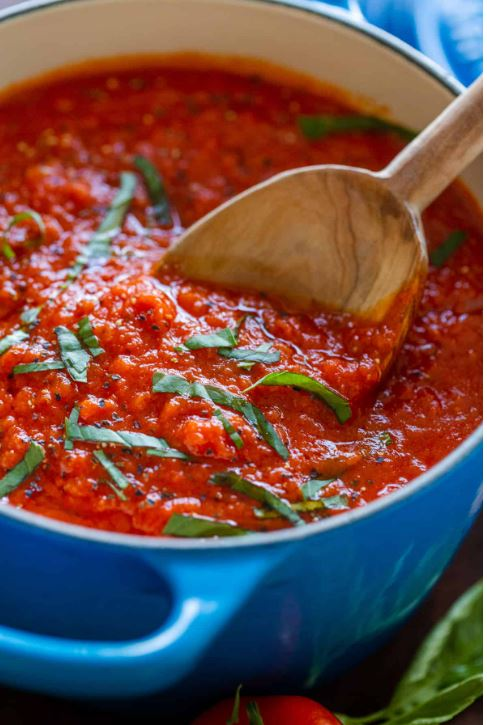

Easy Marinara Sauce
Description
Homemade Marinara Sauce does not get any easier!
Ingredients
2 Tbsp extra virgin olive oil,
1/2 cup medium yellow onion,
3 finely minced garlic cloves,
28 oz crushed tomatoes,
1/2 tsp dried oregano,
1/2 tsp sea salt,
1/4 tsp black pepper,
1 Tbsp fresh basil
Steps
- Place a medium saucepan over medium heat and add 2 Tbsp olive oil. Once the oil is hot, add 1/2 cup chopped onion stirring often until soft and golden (about 5 min). Add minced garlic and stir 1 min, or until fragrant.
- Stir in 28 oz crushed tomatoes, 1/2 tsp oregano, 1/2 tsp salt and 1/4 tsp pepper. Bring to a light boil then reduce heat and simmer partially covered for 15 minutes.
- Finally, stir in 1 Tbsp chopped fresh basil then turn off the heat.